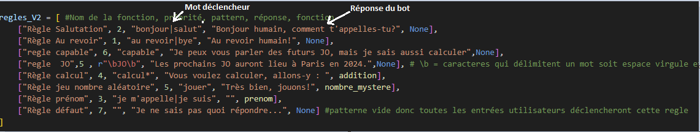
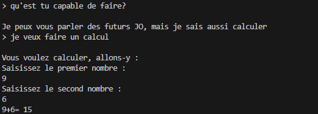
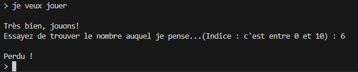

Principe du projet
Le but de ce projet est de faire une mini version d'un chatbot avec lequel il est possible d'avoir certaines conversations

Fonctionnement
le programme scanne les entrées utilisateur et cherche des mots clés avec des opérations régulieres (REGEX) pour envoyer une réponse appropriée

Fonctionnalitées
Ce bot munit d'une mémoire qui lui permet de retenir le prénom de l'utilisateur pour le réutiliser ulterieurement.
Il est possible de faire 2 activitées. La premiere consiste en une addition simple ou l'utilisateur rentre 2 nombres et le bot calcul puis renvoit le résultat.

Il est également possible de jouer avec le bot. Le bot choisit un nombre entre 1 et 10 et l'utilisateur doit le deviner.
